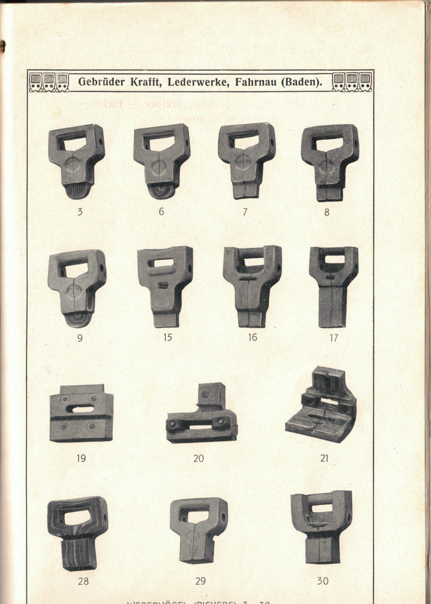
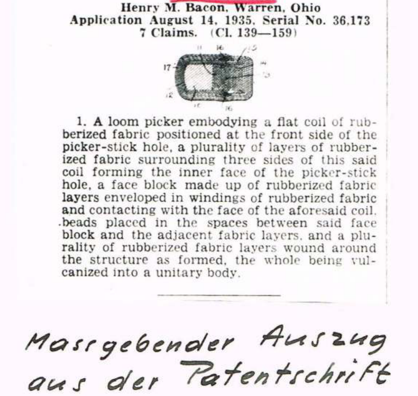
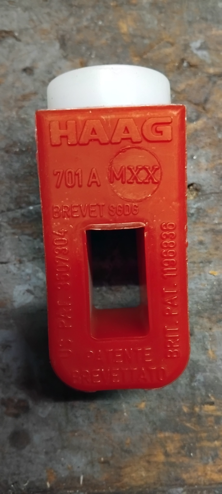
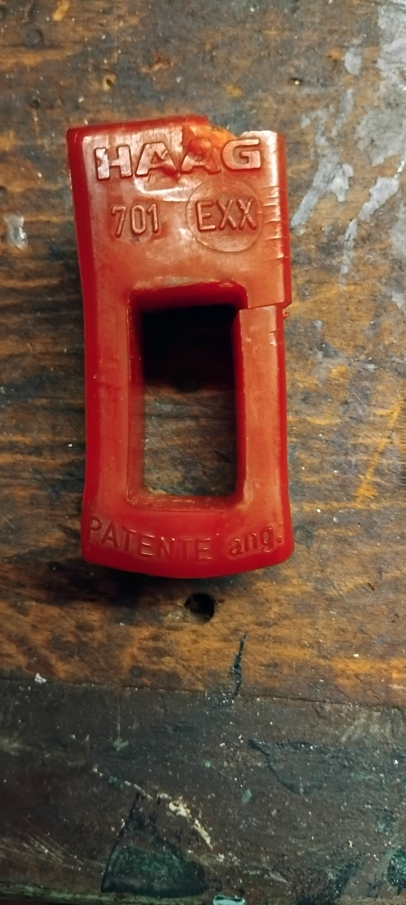
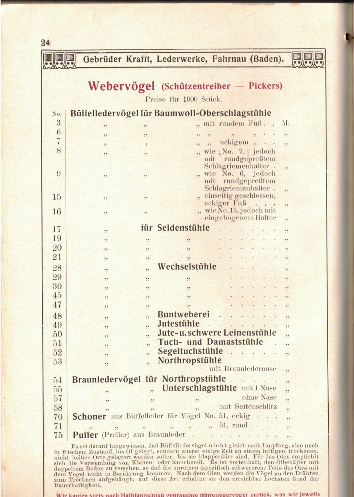
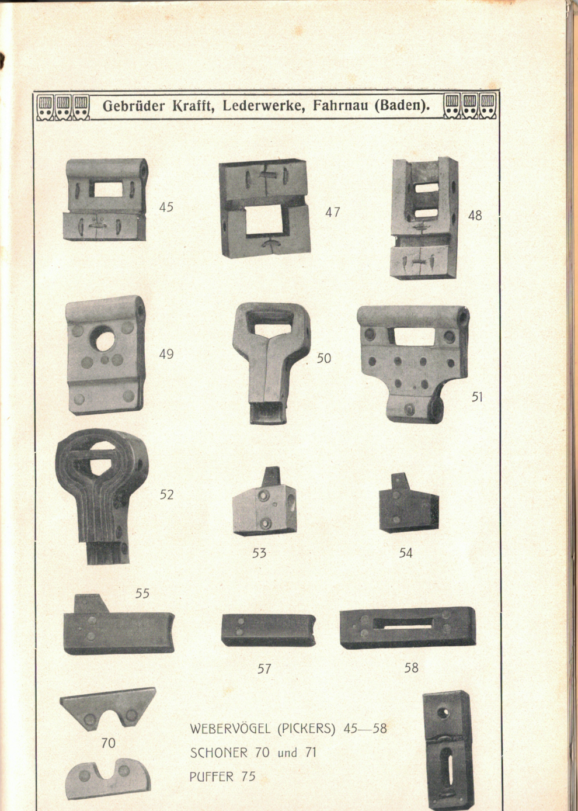

Webervögel
aus Leder
Auch Pickers oder Schützentreiber genannt: ein wenig bekanntes Spezialprodukt der Gebrüder Krafft aus Fahrnau und ein wichtiges Bauteil mechanischer Webstühle.
Originale von 1913 entdecken
Ein Lederprodukt für die Weberei
Mechanische Webstühle benötigten Bauteile, die wiederholten Schlägen standhielten. Der Webervogel übertrug den Impuls des Schlagwerks auf den Webschützen. Gebrüder Krafft entwickelte dafür eine eigene Fertigung.
Nach der Krafft-Jubiläumsschrift begannen Anfang der 1860er-Jahre Versuche zur Herstellung nach englischem Vorbild.
Die ersten eigenen Hilfsmaschinen bewährten sich nicht. Krafft bezog Geräte aus England und zog einen englischen Fachmann hinzu.
Der erhaltene Firmenkatalog zeigt zahlreiche Ausführungen von Webervögeln sowie Schoner und Puffer.
Aus Fahrnau – als englische Ware verkauft
Die Jubiläumsschrift berichtet, dass Kunden zunächst englische Webervögel bevorzugten und die Erzeugnisse von Krafft ablehnten. Ein Händler verkaufte die Fahrnauer Produkte daraufhin als englische Ware.
Als Krafft später den Direktvertrieb übernahm, musste das Unternehmen den Abnehmern erst erklären, dass die bisher vermeintlich englischen Produkte tatsächlich aus Fahrnau stammten. Der Absatz entwickelte sich laut Unternehmensdarstellung anschliessend positiv.
Ein kleines Lederbauteil erzählt von Techniktransfer, Qualitätsvorstellungen und dem Wettbewerb zwischen deutscher und englischer Industrie.
Die Webereien im Wiesental
Im 19. Jahrhundert entwickelte sich das Wiesental zu einer bedeutenden Textilregion. Spinnereien und mechanische Webereien prägten die Orte entlang der Wiese. Für mechanische Webstühle wurden verschleissfeste Bauteile benötigt – darunter Webervögel aus Leder.
Textilstandorte in der Region
In Zell und Schönau bestanden mit der Mechanischen Weberei Zell und der Spinnerei und Weberei Schönau wichtige Betriebe. Auch Haagen bei Lörrach und Todtnau gehörten zur regionalen Textillandschaft. Nicht jeder Textilbetrieb betrieb jedoch Webstühle: Spinnereien und Webereien erfüllten unterschiedliche Aufgaben.
Krafft als Zulieferer?
Die Herstellung von Webervögeln bei Gebrüder Krafft ist durch die Jubiläumsschrift von 1929 und den Firmenkatalog von 1913 dokumentiert. Eine direkte Belieferung der hier genannten Webereien ist bisher nicht nachgewiesen.
Die räumliche Nähe zeigt dennoch, in welchem industriellen Umfeld sich die Lederwarenfertigung in Fahrnau entwickelte.
Zur regionalen Einordnung: Wiesentäler Textilmuseum in Zell.
Von der Büffelhaut zum Webervogel
Für die Webervögelfabrikation verwendete Krafft laut Jubiläumsschrift Büffelhäute. Diese wurden gekälkt, enthaart und anschliessend getrocknet. Zunächst übernahm eine benachbarte Gerberei diese Vorarbeiten, später erfolgten sie im eigenen Betrieb.
Die historische Darstellung nennt die Entwicklung von Handpressen zu mechanischen Pressen. Bereits die unterschiedlichen Modelle im Katalog zeigen, dass die Bauteile auf verschiedene Webstuhltypen abgestimmt waren.
Webervögel sind nicht mit Schlagriemen zu verwechseln: Beide wurden an Webmaschinen eingesetzt, erfüllten aber unterschiedliche Aufgaben.
Das Wiesental als industrielles Umfeld
Fahrnau lag in einer Region mit bedeutender Textilindustrie. Die Herstellung solcher Verschleissteile bei Krafft zeigt eine technische Verbindung zwischen Lederverarbeitung und mechanischer Weberei.
Vom Lederpicker zum Verbundwerkstoff: 1904–1960
Der Krafft-Katalog von 1913 dokumentiert Lederpicker. Weitere historische Fachtexte, Patente und Betriebsunterlagen zeigen, wie sich die Pickertechnik im 20. Jahrhundert veränderte. Diese spätere Entwicklung ist keine belegte Fortsetzung der Produktion bei Krafft.
Ein Fachartikel in den «Mitteilungen über Textil-Industrie» beschreibt Picker aus Schweins- und Büffelleder, ihre Behandlung mit Öl, die Anpassung an den Webstuhl und Schäden durch falsche Einstellung oder Verschleiss. Leder war ein anspruchsvolles technisches Verbrauchsmaterial.
Das US-Patent 2,032,734 von Henry M. Bacon beschreibt einen Picker aus gummierten Gewebelagen. Solche Verbundkonstruktionen sollten Stösse aufnehmen und die Lebensdauer verbessern. Das Patent belegt eine technische Alternative, nicht deren allgemeine Einführung.

Ein Besuchsbericht von 1954 und Werbeunterlagen von 1955 dokumentieren Dayton-Picker. Unterschiedlich harte Bereiche sollten Lagerung, Schlagstockaufnahme und Kontakt zum Webschützen jeweils passend beanspruchen und schützen. Herstellerangaben sind dabei von unabhängigen Prüfungen zu unterscheiden.
Ein Besuchsbericht bei Leder & Co. in Rapperswil beschreibt Polydur-Picker und Vergleichserfahrungen mit Dayton. Die behauptete dreifache Lebensdauer bestätigte sich in Bütschwil nicht; dort galt die Haltbarkeit als ungefähr gleich. Zu harte Picker konnten zudem Schützenspitzen beeinträchtigen. Eine Ledereinlage sollte den Kontakt abfedern.
Die Maschinenfabrik Rüti verglich Pirelli mit Dayton: Bei Cantoni schnitt Dayton besser ab, in Russikon galten beide als gleichwertig und in Bütschwil wurde Pirelli mindestens gleichwertig beurteilt. 1959 standen CHF 1.55 für Pirelli CHF 1.50 für Dayton gegenüber. Eine interne Stellungnahme von 1960 befürwortete eine begrenzte statt einer vollständigen Umstellung.
Die Unterlagen zeigen keinen geradlinigen Ersatz von Leder durch einen einzigen neuen Werkstoff. Entscheidend waren Haltbarkeit, Dämpfung, Maschinenverträglichkeit, Preis und die konkrete Webstuhlbauart.
HAAG-Picker im heutigen Museumsbetrieb
Picker sind nicht nur auf historischen Katalogseiten zu finden. In betriebsfähigen Schützenwebstühlen werden sie weiterhin benötigt – und durch ihre starke mechanische Beanspruchung können sie brechen oder verschleissen.
Die beiden hier dokumentierten Vergleichsstücke tragen die Marke HAAG. Ihre sichtbaren Bezeichnungen lauten 701 A MXX und 701 EXX. Es handelt sich um andere Fabrikate als die im Krafft-Katalog von 1913 abgebildeten Produkte. Ein Herstellungszusammenhang mit Gebrüder Krafft ist nicht belegt.


Wenn Ersatzteile fehlen
Aus einem Museum mit weiterhin eingesetzten historischen Webmaschinen erreichte uns im November 2026 die Nachricht, dass dort ebenfalls Picker verwendet werden und erst kürzlich einer zerbrochen ist. Da passende Ersatzteile inzwischen schwer zu beschaffen seien, werde eine eigene Nachfertigung geprüft.
Bildnachweis: zwei vom Museum übermittelte Aufnahmen, November 2026. Museumsname und ausdrückliche Freigabe für die öffentliche Bildverwendung sind vor der Veröffentlichung noch zu bestätigen. Angaben zu Herstellerhistorie, Materialrezeptur und Patentnummern werden hier bewusst nicht über die sichtbaren Markierungen hinaus interpretiert.
Die Webervögel im Krafft-Katalog
Die Preis-Liste für technische Leder und Lederwaren enthält eine eigene Rubrik „Webervögel (Schützentreiber – Pickers)“. Die folgenden Abbildungen stammen unmittelbar aus dem erhaltenen Original.


Die Bilder lassen sich durch Anklicken vergrössern. Die Katalogseiten wurden aus dem historischen Originalscan ausgeschnitten, nicht künstlich rekonstruiert.
Quellen und Einordnung
Gedruckte Seiten 24–26: „Webervögel (Schützentreiber – Pickers)“, Modellübersichten und verwandte Bauteile. Abbildungen aus dem historischen Katalogscan.
Abschnitt „Webervögelfabrikation (Pickers)“: erste Versuche, englische Maschinen, Vertriebsgeschichte und Verarbeitung der Büffelhäute.
Zwei HAAG-Picker (701 A MXX und 701 EXX) und Bericht zur Ersatzteilbeschaffung bei weiterhin betriebenen historischen Webmaschinen. Museum und Bildrechte vor öffentlicher Nutzung noch zu bestätigen.
Zeitgenössischer Fachartikel zu Lederpickern, Pflege und Betrieb.
Patent zu einem mehrlagigen Picker aus gummiertem Gewebe.
Technische Ausführungen und Herstellerangaben zu Härtegraden und Verschleiss.
Polydur-Picker, Vergleich mit Dayton und betriebliche Rückmeldungen.
Vergleiche aus Cantoni, Russikon und Bütschwil sowie interne Beschaffungsabwägungen.
Die Quellen dokumentieren technische Entwicklungen und einzelne Betriebserfahrungen. Sie belegen weder eine direkte Verbindung dieser Hersteller zu Krafft noch eine lückenlose Entwicklungslinie.